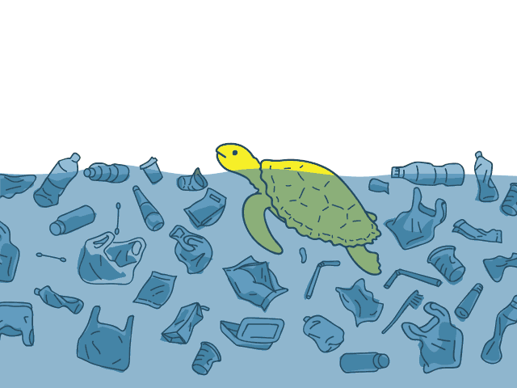

Conectando pessoas por cidades mais limpas
O PoliReciclo é um aplicativo colaborativo que une cidadãos, catadores e gestores públicos no combate ao descarte irregular de lixo e na promoção de cidades sustentáveis.
25k+ usuários
12k+ denúncias
50+ cidades
Como o PoliReciclo transforma sua cidade
Uma plataforma completa para gestão de resíduos e limpeza urbana
Denúncia de Pontos Críticos
Reporte focos de descarte irregular com geolocalização precisa e fotos.
Rotas de Coleta Seletiva
Acesse informações sobre dias e horários de coleta em sua região.
Alertas de Alagamento
Visualize em tempo real áreas com risco de inundação devido ao entupimento de bueiros.
Comunidade Ativa
Conecte-se com outros cidadãos, catadores e gestores públicos.
Impacto Real nas Cidades
68%
Redução de pontos críticos
42%
Aumento na reciclagem
74%
Resposta mais rápida das prefeituras
Baixe agora o aplicativo
- ✔ Denuncie pontos de lixo irregular
- ✔ Acompanhe rotas de coleta seletiva
- ✔ Receba alertas de áreas de alagamento
- ✔ Participe de mutirões de limpeza
